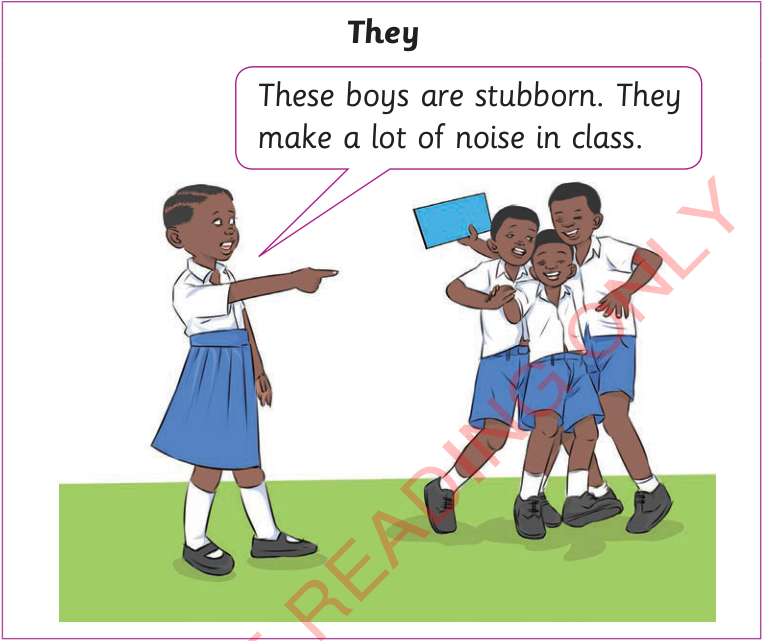

FOR ONLINE READING ONLY

(b)
Listen to/observe the conversation.
(c)
Read the following dialogue and fill in the blanks with the correct pronouns. Use the following pronouns: I, we, you, he, she, it, they.
An interview with a farmer
Luta:
Hello!
Maswi:
Hello!
Luta:
I’m Luta. [[blank:item-1]] want to buy cows. Do you have any?